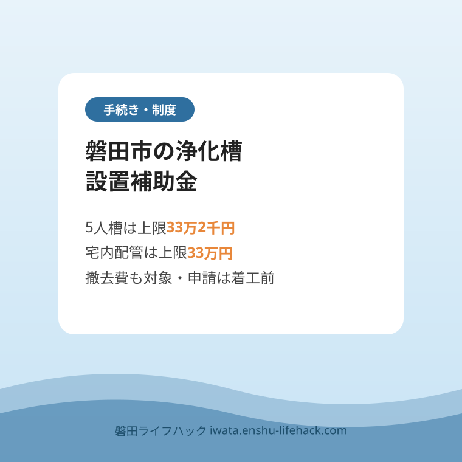

子育て・学び
磐田市の浄化槽設置補助金｜5人槽は上限33万2千円・宅内配管は上限33万円、単独槽からの転換は撤去費も対象

この記事の要点
Q. 磐田市の浄化槽設置補助金は、誰が・いくら受けられますか？
A. 公共下水道の認可区域外で合併処理浄化槽を新設する方、単独処理浄化槽・くみ取り便槽から設置替えする方が対象。設置費の上限は5人槽33万2千円・7人槽41万4千円・10人槽54万8千円で、宅内配管工事費は上限33万円、撤去費は上限12万円から15万円。申請は着工前に、上下水道総務課（福田400番地、電話0538-58-3086）へ。
下水道の整備予定がない地域で家を建てたり、古い単独処理浄化槽やくみ取り便槽を合併処理浄化槽へ替えたりするとき、工事費は決して小さくありません。磐田市には、その設置費用の一部を補助する制度があります。「磐田市浄化槽設置整備事業費補助金」です。
この記事では、磐田市が公表している令和8年度の「浄化槽設置整備事業 補助金交付申請の手引き」と「浄化槽設置の補助制度（令和8年度版）」を実際に開いて、補助の金額・対象になる区域と条件・申請から振込までの流れを確認しました。申請は着工前が原則で、期限も年度内に区切られているため、工事の相談と並行して早めに動くことが大切な制度です。
まず結論｜設置費・宅内配管・撤去費の三つが補助の対象
補助の対象になる経費は三つです。浄化槽本体の設置費、宅内配管工事費、そして単独処理浄化槽やくみ取り便槽から転換する場合の撤去費です。
設置費の上限は人槽ごとに決まっていて、5人槽で33万2千円、7人槽で41万4千円、10人槽で54万8千円です。宅内配管工事費は上限33万円、撤去費は単独処理浄化槽からの転換で上限15万円、くみ取り便槽からの転換で上限12万円が目安になります。
ただし、どこでも使える制度ではありません。対象は、公共下水道の事業認可を受けていない区域で、農業集落排水事業の実施区域以外の区域に限られます。自分の土地が対象区域かどうかが、すべての出発点です。
補助額の一覧｜7人槽への転換なら上限の合計は89万4千円
補助金の額は、経費の区分ごとに上限が定められています。設置費は人槽が大きいほど上限も大きくなり、5人槽33万2千円、7人槽41万4千円、10人槽54万8千円です。
宅内配管工事費の上限は33万円です。便槽や既存の配管から新しい浄化槽へつなぎ替える工事は、家の中と庭の両方に及ぶことが多く、この区分が用意されている意味は小さくありません。
撤去費は、単独処理浄化槽から転換するものが上限15万円です。ただし、撤去した槽を雨水貯留槽等へ再利用する場合は上限12万円になります。くみ取り便槽から転換するものの撤去費は上限12万円です。
たとえば、単独処理浄化槽から7人槽の合併処理浄化槽へ転換する場合、上限額を単純に合計すると、設置費41万4千円＋宅内配管工事費33万円＋撤去費15万円で89万4千円になります。実際の補助額は、それぞれの経費の実額と上限の関係で決まるため、見積りの段階で区分ごとの金額を業者と確認しておく必要があります。
なお、人槽は世帯の人数で決まるものではありません。建物の用途や大きさなどから算定されるため、何人槽になるかは施工業者や窓口で確認してください。「4人家族だから5人槽」とは限らない点は、見積りを取る前に知っておきたいところです。

対象区域｜下水道の認可区域と農業集落排水の実施区域は対象外
この制度の目的は、生活排水による海や河川などの水質汚濁を防ぎ、公共用水域の水質を保つことです。そのため、対象区域は「公共下水道等の予定がない区域」を基本に線引きされています。
具体的には、公共下水道の事業認可を受けていない区域であること、そして農業集落排水事業の実施区域以外の区域であることの、二つが区域の条件です。下水道へ接続できる地域の住宅は、この補助金の対象にはなりません。
磐田市内でも、同じ町内の中で下水道の認可区域とそうでない区域が分かれている場合があります。住所だけで判断せず、申請の前に上下水道総務課の窓口で、設置予定地が対象区域かどうかを必ず確認してください。
対象の条件｜10人槽以下・自ら住む住宅・年度内に工事完了など
補助を受けるには、対象の条件をすべて満たす必要があります。まず、設置する浄化槽が10人槽以下であること。そして、浄化槽法に基づく浄化槽設置の届出を行っていること、または建築基準法に基づく建築の確認を受けていることです。
建物については、住宅に設置する浄化槽であることが条件です。店舗などを兼ねる併用住宅の場合は、住宅部分の床面積が延床面積の2分の1以上であることが求められます。
住宅を借りている場合は、賃貸人の承諾を得て設置するものであることが必要です。また、販売目的で建築する住宅に設置するものは対象になりません。補助金交付申請者自らが居住するための住宅に設置するものであることも条件です。
時期の条件もあります。設置補助の対象年度内に浄化槽設置工事が完了するものであること、そして国の交付金要綱に適合するものであることが必要です。家屋を新築または増築する場合は、汚水処理未普及解消につながるものであることも求められます。
見落としやすいのが、既設浄化槽の更新や改築は対象にならない点です。合併処理浄化槽が古くなったからといって新しいものへ替える工事は、原則としてこの補助の対象外です（災害に伴う場合は除きます）。対象になるのは、新設と、単独処理浄化槽・くみ取り便槽から合併処理浄化槽への設置替えです。
対象となる浄化槽そのものにも性能の条件があります。し尿と雑排水をあわせて処理する浄化槽で、BOD（生物化学的酸素要求量）の除去率が90％以上、放流水のBODが20mg/L以下に処理する機能があり、合併浄化槽設置整備事業における国庫補助指針に適合するものに限られます。製品選びは施工業者と相談しながら進めることになります。
手続きの流れ｜申請は着工前、期限は対象年度の1月末まで
手続きは、申請前の準備から始まります。まず、補助金交付申請予定地が補助対象かどうか、補助対象の条件をすべて満たしているかを、上下水道総務課の窓口等で確認します。
申請の期限は、対象年度の1月末までです。そして、補助金交付申請は着工前に提出するよう案内されています。工事が始まってからの申請では間に合わないため、業者への見積り依頼と補助金の確認は、並行して進めてください。
申請書類は、工事施工業者を経由して上下水道総務課へ提出する流れが案内されています。主な書類は、補助金交付申請書（様式第1号）と収支予算書（様式第2号）です。
あわせて、建築確認通知書等の写し（確認済証など）、または浄化槽設置届出書の写しが必要です。設置届出書の写しを使う場合は、保健所の受付印が押され、受付日から10日以上経過していることが求められます。
そのほか、し尿浄化槽の概要書の写し、浄化槽設置場所の案内図（住宅地図等）、建物平面図および屋内外の排水設備図（浄化槽の設置箇所と排水の放流先が分かるもの）などをそろえます。転換の場合は、従前の汚水処理方法に応じた書類（くみ取り料金の請求書や、みなし浄化槽の清掃記録など）が加わることもあります。
申請を受けて、市は補助金の交付額決定通知書（様式第4号）を通知します。その後に設置工事を行います。工事では、浄化槽の据付工事に着手する前に、浄化槽本体の写真を撮影しておくことが求められています。この写真は完了報告のときに提出するため、業者と事前に取り決めておくと安心です。
工事が完了したら、完了報告を行います。提出は、工事完了の日から10日以内、または対象年度の3月20日までの提出が案内されています。年度末に工事が重なる場合は、3月20日という日付が実質の締め切りになります。
市は完了報告を確認し、補助金の交付額確定通知書を通知したうえで、完了報告書で指定された金融機関の口座へ補助金を振り込みます。なお、交付決定の内容や条件に違反したときは、交付決定の取消しや補助金の返還を求められる場合があることも、手引きに明記されています。

窓口と問い合わせ先｜上下水道総務課 給排水サービスグループ
申請窓口は、磐田市環境水道部 上下水道総務課 給排水サービスグループです。住所は磐田市福田400番地、電話0538-58-3086、ファクス0538-58-3123と案内されています。
市役所本庁舎ではなく、福田の上下水道の窓口が担当です。下水道や水道の手続きで訪れたことのある方にはおなじみの場所ですが、初めての方は提出先を間違えないよう注意してください。
相談の際は、設置予定地の住所、現在の汚水処理の方法（くみ取り・単独処理浄化槽・合併処理浄化槽のどれか）、新築か設置替えかの別を伝えられるようにしておくと、対象かどうかの確認が早く進みます。
良い点
良い点は3つあります。第一に、設置費だけでなく、宅内配管工事費と撤去費まで補助の区分が用意されている点です。転換の工事では、本体の交換以外にも配管のつなぎ替えと古い槽の撤去に費用がかかります。実際の工事の内訳に沿った区分になっているのは、使う側にとって分かりやすい設計です。
第二に、金額が人槽ごとに上限として明示されている点です。5人槽33万2千円、7人槽41万4千円、10人槽54万8千円と、見積りを取る前に資金計画の目安を置けます。
第三に、手引きが申請書類・工事写真の撮り方・完了報告の期限まで具体的に書かれている点です。施工業者を経由して提出する流れも含め、手順の全体像を事前に把握できます。
注文したい点
注文したい点もあります。まず、申請期限が対象年度の1月末までで、工事完了は年度内、完了報告は3月20日までという、年度末へ向けて締め切りが重なる点です。冬に工事を決めると、日程の余裕が一気になくなります。相談は、できれば年度の前半に済ませておきたいところです。
また、対象区域の線引きは住所単位では分かりにくく、窓口での確認が前提になります。自分の土地が下水道の認可区域かどうかを、地図で事前に確かめられる案内がもう一歩あると、相談前の迷いは減るはずです。
さらに、この補助は予算の範囲内で行われるものです。年度の途中で受付の状況が変わる可能性も考えると、対象と分かった時点で、受付が続いているかを窓口に確かめてから契約へ進む進め方が安全です。
対案・結論
対案として提案したいのは、空き家や実家の整理で「くみ取り便槽のまま残っている家」を把握したときに、この転換補助をあわせて案内する運用です。撤去費と宅内配管まで対象になる転換の補助は、水洗化とあわせて家の使い勝手を大きく変えます。売る・貸す・住み続けるのどの道を選ぶにしても、判断材料として早い段階で示される価値があります。
結論として、この補助金は、下水道の認可区域外で合併処理浄化槽を新設する方と、単独処理浄化槽・くみ取り便槽から設置替えする方が対象で、設置費は人槽ごとに上限33万2千円から54万8千円、宅内配管工事費は上限33万円、撤去費は上限12万円から15万円です。申請は着工前、期限は対象年度の1月末まで。まず設置予定地が対象区域かどうかを、上下水道総務課で確認するところから始めてください。
確認する順番
- 設置予定地が公共下水道の事業認可区域外・農業集落排水の実施区域外かどうかを上下水道総務課（電話0538-58-3086）で確認する
- 現在の処理方法（新設・単独処理浄化槽からの転換・くみ取り便槽からの転換）と、対象条件（10人槽以下・自ら住む住宅・年度内に工事完了など）を点検する
- 施工業者に見積りを依頼し、人槽と、設置費・宅内配管工事費・撤去費の区分ごとの金額を確認する
- 交付申請書・収支予算書・建築確認通知書等の写し（または受付印のある浄化槽設置届出書の写し）・概要書・案内図・平面図と排水設備図をそろえる
- 対象年度の1月末までに、施工業者を経由して着工前に交付申請を提出し、交付額決定通知を待つ
- 着工前に浄化槽本体の写真を撮影し、工事を実施する
- 工事完了から10日以内（または対象年度の3月20日まで）に完了報告を提出し、確定通知と振込を確認する
大石の視点
不動産の現場で郊外の家を扱うと、くみ取り便槽や単独処理浄化槽のままの家に出会うことがあります。その家を買う側にとって、水まわりの処理方法は、間取りや築年数と同じくらい暮らしの質を左右する条件です。ところが、転換の工事費が見えないために、判断を先送りにしてしまう場面も見てきました。
この補助金で評価したいのは、撤去費と宅内配管工事費まで含めて「転換」という工事の全体を支える形になっている点です。本体価格への補助だけでは、実際の支払いの半分も見えてきません。工事の内訳に沿った補助は、見積りの席でそのまま資金計画に落とし込めます。
一方で、申請は着工前が原則で、期限も年度内に区切られています。家づくりや実家の整理は、ほかの手続きと同時に進むことが多いものです。だからこそ、浄化槽のことは「工事の直前に調べること」ではなく、土地や家の相談の最初の段階で、対象区域かどうかだけでも確かめておくことをおすすめします。
まとめ
磐田市の浄化槽設置整備事業費補助金は、公共下水道等の予定がない区域で合併処理浄化槽を新設する方や、単独処理浄化槽・くみ取り便槽から設置替えをする方に、設置費・宅内配管工事費・撤去費の一部を補助する制度です。
- 対象区域は公共下水道の事業認可区域外で、農業集落排水事業の実施区域以外の区域。設置予定地の確認が第一歩
- 設置費の上限は5人槽33万2千円・7人槽41万4千円・10人槽54万8千円。宅内配管工事費は上限33万円
- 撤去費は単独処理浄化槽からの転換で上限15万円（雨水貯留槽等へ再利用する場合は12万円）、くみ取り便槽からの転換で上限12万円
- 申請は着工前に施工業者を経由して上下水道総務課（福田400番地、電話0538-58-3086）へ。期限は対象年度の1月末まで、完了報告は完了後10日以内または対象年度の3月20日まで
参考にした公式情報
- 磐田市「浄化槽設置整備事業 補助金交付申請の手引き」（令和8年度）／磐田市環境水道部 上下水道総務課（補助対象浄化槽・対象区域・対象条件、補助限度額、申請窓口、申請から交付までの手続きと期限を2026年11月25日確認）
- 磐田市「浄化槽設置の補助制度」（令和8年度版）／磐田市（補助の対象と条件の一覧、補助金の額、申請から補助金交付までの流れを2026年11月25日確認）
最終確認日：2026-11-25 ／ 本記事は公表情報と執筆者の見解を分けて記載しています。制度・数値・公開状況は変更される場合があるため、最新情報は磐田市公式ページでご確認ください。